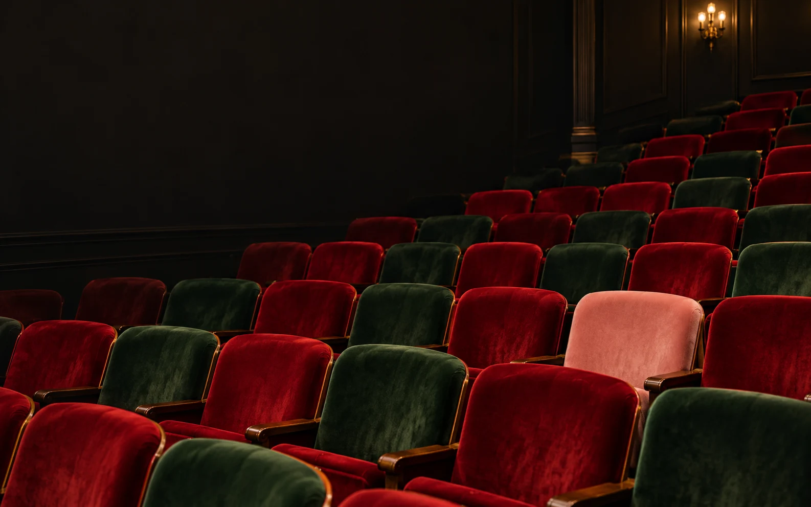

Загляни в афишу
Открой бота и посмотри, какие культурные события есть в проекте.

Культурный проект для студентов · Москва
После пар — в город.
В театр, на выставку, на концерт.
Новые впечатления ближе, чем кажется.
01 / Куда пойти
Сменить аудиторию
на зрительный зал
Познакомимся, чтобы найти твоё следующее впечатление.
Здесь — направления проекта. Актуальные события, даты и условия участия смотри в Telegram.
02 / Как это работает
От «хочу пойти»
до «я на месте»
Открой бота и посмотри, какие культурные события есть в проекте.
Заполни короткий профиль студента и отметь интересы. Номер курса не нужен.
Выбери событие и дождись результата в боте. Если место твоё — там же придёт билет.
Заявка ещё не означает билет. Если желающих больше, чем мест, бот распределяет места случайным образом. Все детали участия — в карточке события.
03 / О проекте
И в нём есть место тебе.
«Есть место» знакомит студентов с культурной жизнью Москвы. Помогаем сделать первый шаг в театр, галерею или концертный зал — даже если раньше казалось, что это «не для меня».
Не обязательно разбираться в режиссёрах, знать все стили или заранее понимать искусство. Достаточно любопытства.
Начать с одного вечера04 / Без неловких вопросов
Для студентов, которым хочется познакомиться с культурной жизнью Москвы. При регистрации бот спросит имя, вуз и интересы. Условия конкретного события указаны в его карточке.
Проект помогает студентам получать свободные места на культурные события. Стоимость и условия участия нужно проверять в карточке события в боте до подачи заявки.
Сначала можно познакомиться с проектом и посмотреть события. Для подачи заявки понадобится короткий профиль: так билет будет связан с конкретным участником.
Результат заявки и билет приходят в Telegram-боте. Проверяй сообщения и раздел с заявками; перед походом прочитай условия посещения в карточке события.
Отмени участие в разделе заявок в боте, как только поймёшь, что не придёшь. Так освободившееся место сможет достаться другому студенту.
Твой вечер ещё не занят
А в зале, где начинается что-то новое.
Открыть Telegram-бота